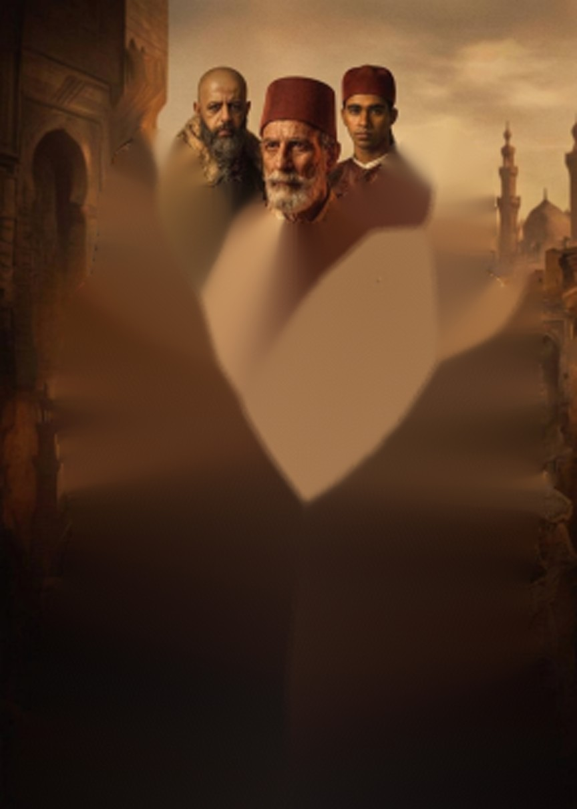
ستريم ماسترأفلام عربية
من عالم السينماأسداكتشف الفيلم
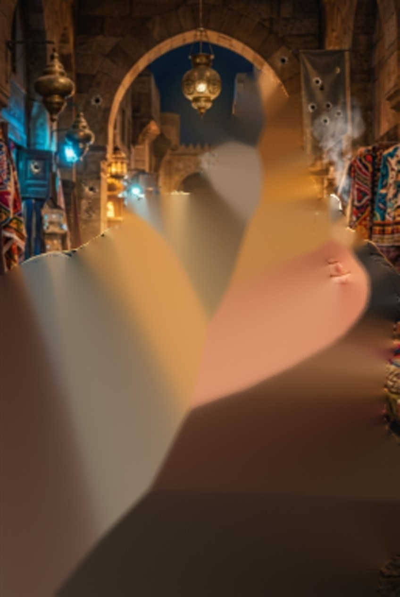
ستريم ماسترأفلام عربية
من عالم السينماصقر وكناريااكتشف الفيلم
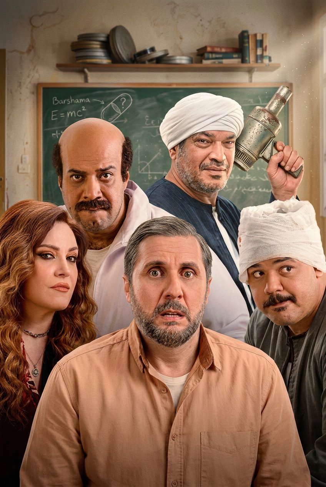
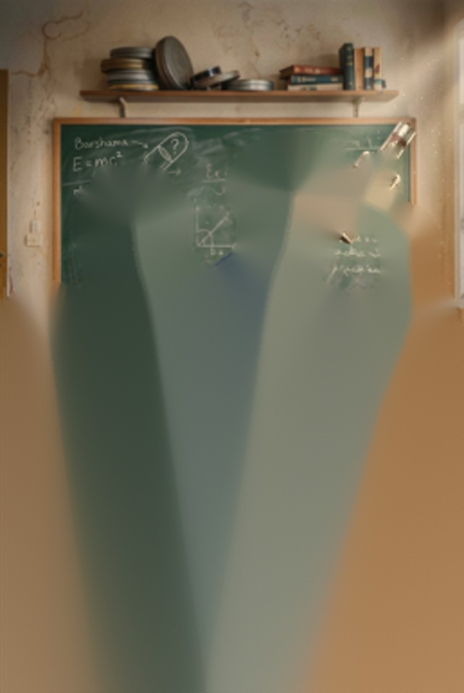
ستريم ماسترأفلام عربية
من عالم السينمابرشامةاكتشف الفيلم
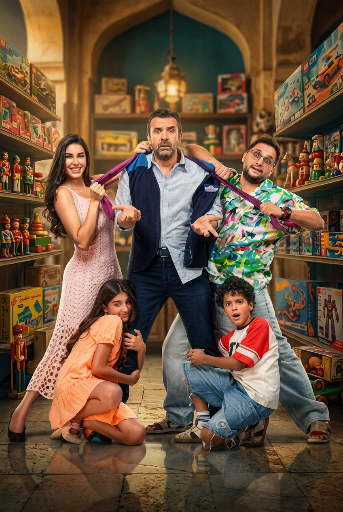
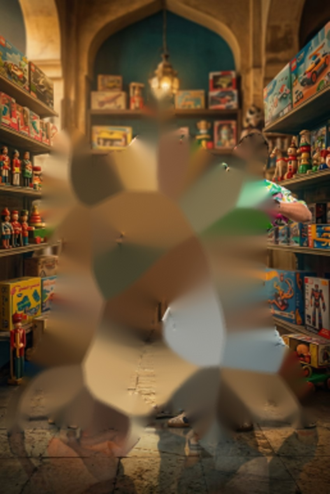
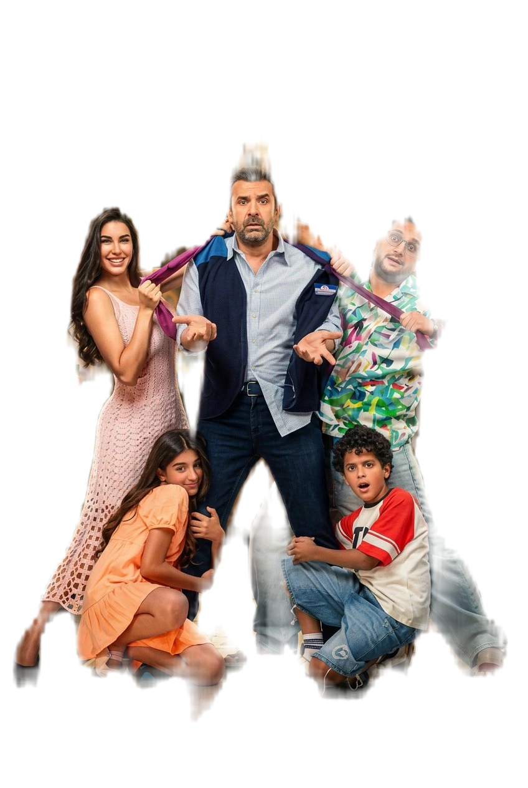
ستريم ماسترأفلام عربية
من عالم السينمامطلوب عائلياًاكتشف الفيلم
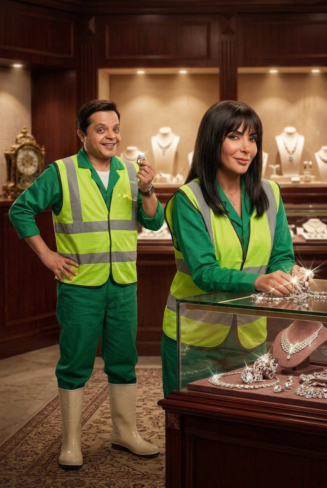
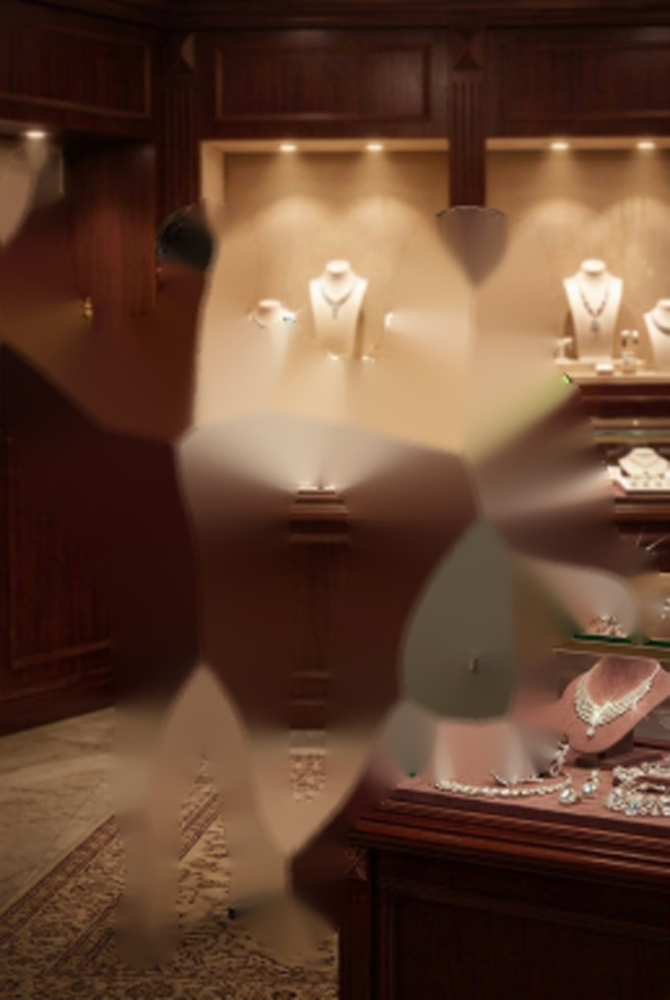
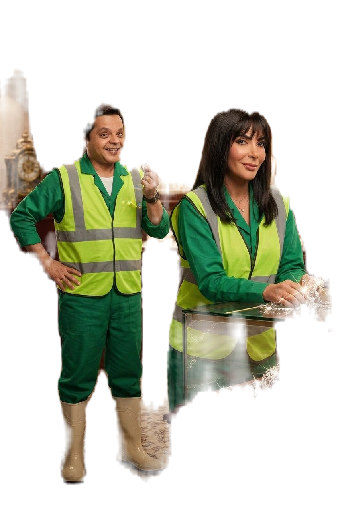
ستريم ماسترأفلام عربية
من عالم السينماالجواهرجياكتشف الفيلم
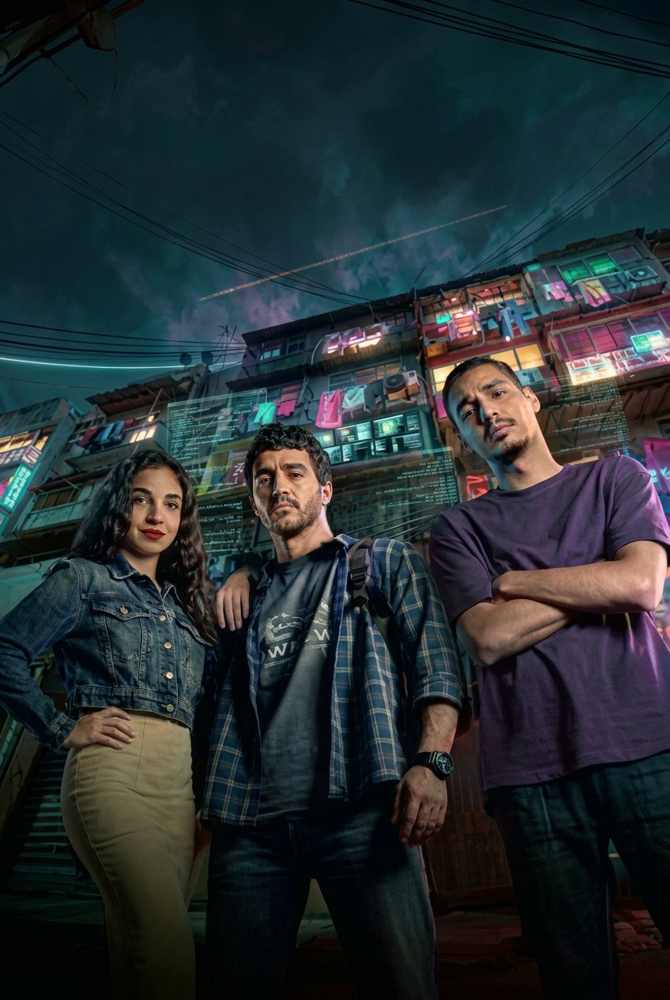
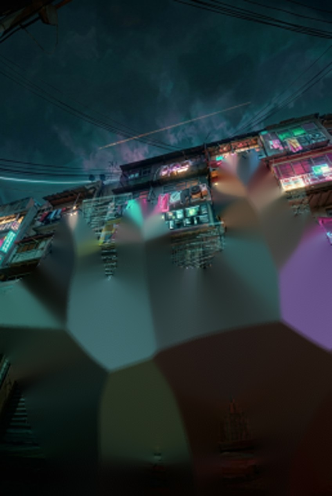
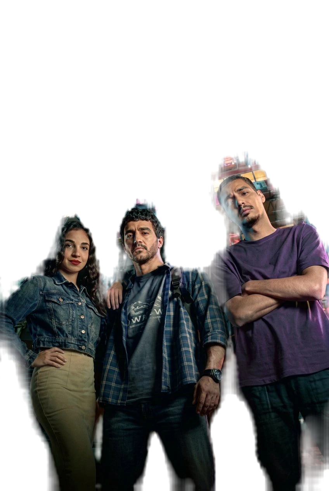
ستريم ماسترأفلام عربية
من عالم السينماإيجي بستاكتشف الفيلم